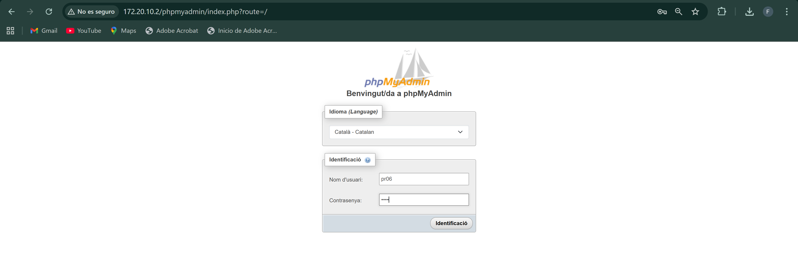
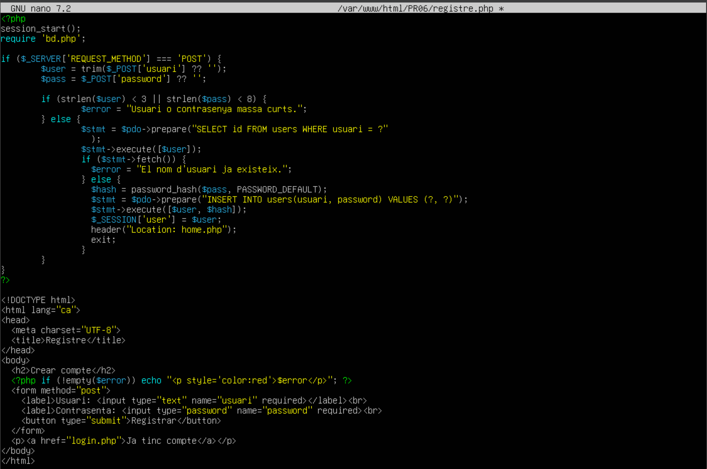
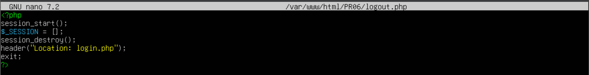

Pràctica de login i resgistre d'usuaris
Funcionalitats a implementar
• Formulari de Registre
- Validar que els camps d’entrada no estiguen buits.
- Assegurar-se que la contrasenya i la confirmació coincideixin abans de guardar-les.
- Guardar el nom d’usuari i la contrasenya (en format hash) a la base de dades.
• Formulari de Login
- Validar les dades introduides, que siguen correctes.
- Verificar que l’usuari i la contrasenya coincideixin amb les dades guardades en la base de dades.
- Si el login és correcte, s’iniciarà una sessió amb el nom de l’usuari.
- Mostrar un missatge, si el login falla, degut a usuari o password incorrectes.
• Gestió de Sessions
- Utilitzar $_SESSION per mantenir l’estat de l’usuari una vegada loguejat.
- Assegurar-se que la sessió es tanque correctament al fer logout.
• Seguretat
- Utilitza password_hash per a guardar les contrasenyes de forma segura.
- Utilitza password_verify per a comparar les contrasenyes al fer login.
- Valida totes les dades d’entrada per evitar injeccions SQL o atacs XSS.
A MariaDB vaig a crear la base de dades amb les dades requerides. Primer crearé la base de dades:
Després usarem dita base de dades i crearem una taula d'aquesta manera amb les caracteristiques que es veuen a continuació

Ara al mateix lloc on ens trobem anem a crear un usuari per tal d'administrar aquesta base de dades.

El seguent pas, es accedir a phpmyadmin amb l'usuari creat.

I una vegada dins podem veure la base de dades creada amb la taula corresponent alhora.

Els fitxers que s'han implementat son els seguents:
bd.php

registre.php

login.php

home.php

logout.php
